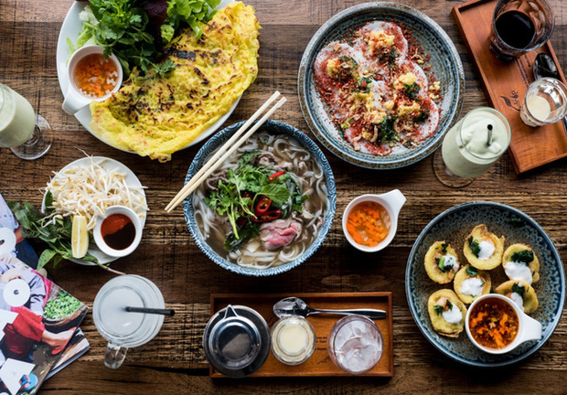
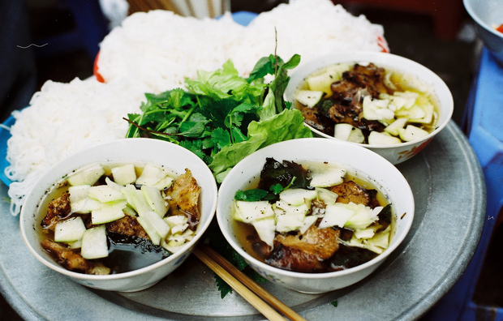

Việt Nam ta không thiếu những món ăn ngon. Ta có hằng hà sa số những món ngon mà độc đáo, từ bộ sưu tập những món bún, phở, bánh canh có thể so sánh ngang tầm với văn hoá pasta của Ý, những cái tên đình đám trong ẩm thực đường phố, cho đến những món ăn trong mâm cơm mẹ nấu hằng ngày, tất cả đều mang một hương vị đặc trưng Việt Nam, không lẫn vào đâu được.
Nếu nhìn qua, bún chả không phải là một món ăn đặc biệt. Đi dọc đất nước, ta sẽ không khó để bắt gặp những món ăn có kết cấu tương tự như bún chả Hà Nội. Vì xét ra, nguyên liệu chính của bún chả đều là những thứ bán ở chợ mỗi ngày. Không cần cả tủ gia vị gia truyền như bún bò hay phở, cũng chẳng cần phải chờ mùa như rươi như ốc, cũng không phải chuẩn bị đủ thứ cầu kì như bún thang, bún mắm... bún chả của Hà Nội xét về phương diện nào đó thì giản dị đến dễ thương. Ta chỉ cần có bún, có thịt ba chỉ, thêm vài món có sẵn trong nhà là hành khô, tỏi, ớt, chịu khó đi mua thêm đu đủ, cà rốt và bó rau sống là xong rồi.
